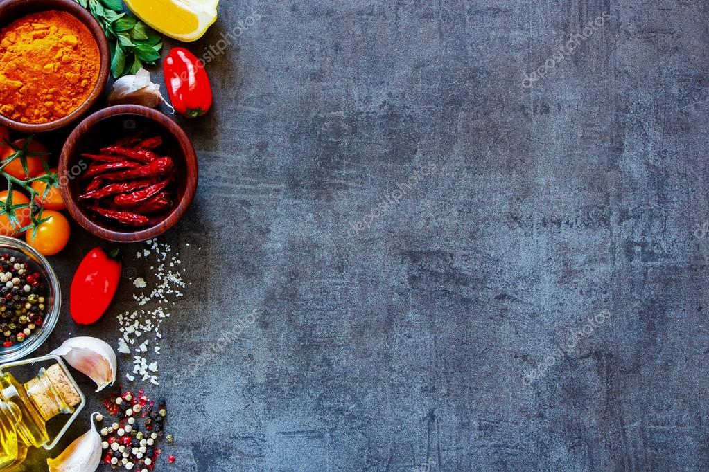

Aluwa
Ingredients
- 1 grams Rice Flour
- 2 cups Honey can use 750grams of sugar
instead of honey
- 1 tsp cardamom powder
- 100 grams Cashew Nuts
Instructions
- First of all, fry the rice flour until
golden color.
- Set aside some of the flour.
- Then sift the flour.
- If there is honey, put it into a pan
and melt it on the stove.
- If there is no honey, we can use sugar
instead of it. Put sugar into a pan and add 2.5 cups of water. Then
melt it on the stove until it becomes honey. Once the sugar syrup /
honey reaches the threading point remove it from the stove.
- Add cardamom powder and mix well.
- Then let it dry for few minutes.
- Add flour and mix well. Add cashews to it.
- Stir until it becomes like a paste.
- Sprinkle the remaining flour on a
plate/tray, add the mixture and thinly sprinkle with flour.
- Then cut the "Aluwa" to the desired shape
and size.
